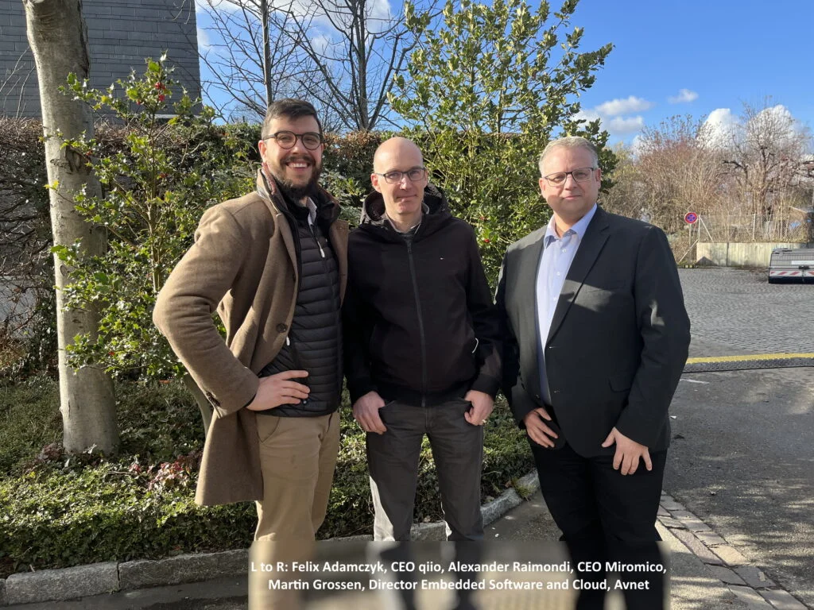

February 16, 2022
“A whole lot of Swissness”: Miromico and qiio announce the new Microsoft® Azure Sphere-secured miro Edge Sphere LoRaWAN Gateway
Zurich, February 16, 2022 – Miromico® and qiio® – both Swiss technology
companies – today announced the availability of the Microsoft Azure Sphere enabled miro Edge Sphere LoRaWAN
Gateway. The device provides a highly secure and robust LoRaWAN® networking solution that meets the needs of
a wide range of loT applications. The gateway is available through Avnet Silica®.
The close collaboration of two highly specialized Swiss partner companies, Miromico, an established OEM of
loT devices and a recognized expert in LoRaWAN (Long Range Wide Area Network), and qiio, which provides
proven, edge-to-cloud loT solutions with intelligent cellular connectivity, has resulted in the development
and production of a new LoRaWAN gateway which offers a level of quality, performance and security never
before achieved.
The miro Edge Sphere LoRaWAN Gateway is a robust indoor LoRaWAN gateway with global cellular coverage
out-of-the-box (eSIM), Ethernet and WiFi. Powered by qiio’s Concentrator XN, it enables connectivity, device
management, monitoring, collecting and tracking of data in an almost limitless range of environments from
Smart Buildings and Smart Cities to agricultural applications and retail. The small form-factor, only 110 x
129 x 33 mm, allows a simple integration into any infrastructure.
Alexander Raimondi, CEO of Miromico: “qiio is a key partner for Miromico to drive the loT strategy to the
next level. With the Microsoft Azure Sphere enabled LoRa gateway, qiio provides the essential building
blocks for highly scalable and secure LoRaWAN® based loT solutions.”
Felix Adamczyk, CEO of qiio: “Miromico is an important and respected hardware partner for qiio. Their
in-depth know-how and highly professional offering as well as our close cooperation and mutual understanding
of quality has enabled the development of the unique miro Edge Sphere LoraWAN loT solution.”
LoRaWAN enables the energy-efficient transmission of data over long distances and, due to its unique
features, meets important network requirements of the Internet of Things (loT) and Industrial Internet of
Things (lloT), such as bidirectional connectivity and high mobility.
With the integration of the Microsoft Azure Sphere platform, the LoRaWAN gateway provides a complete
security system to ensure smooth operation. Azure Sphere provides multi-level security through Microsoft’s
defined “Seven Properties of Highly Secure Devices” which ensure the integrity of networked assets and
devices while protecting against cyberattacks. Guaranteed maintenance of the gateway is also provided
throughout its operational life as well as renewable security through software updates.
The Microsoft Azure Sphere-enabled LoRaWAN gateway from Miromico and qiio is available through our partner
Avnet Silica. To view the technical specification and request a demo, visit:
www.avnet-silica.com/lora-gateways
Photo: L to R: Felix Adamczyk, CEO qiio, Alexander Raimondi, CEO Miromico, Martin Grossen, Director Embedded
Software and Cloud, Avnet

The miro Edge Sphere LoRaWAN Gateway secured by Microsoft Azure Sphere
Press contacts:
Shekeb Fateh
Director of Business Development
Miromico AG
Email: sfateh@miromico.com
Gallusstrasse 4
8006 Zurich, Switzerland
Dorothy Kohl
VP Business Strategy Sales a Marketing
Email: dorothy.kohl@qiio.com
qiio AG
Am Wasser 24
8049 Zurich, Switzerland
About Miromico®
An established loT device OEM focused on design services in integrated circuits, electronic systems,
software and manufacturing.
https://miromico.ch
About qiio®
qiio delivers proven edge-to-cloud solutions with intelligent cellular connectivity. We provide scalable,
reliable and secure loT services and products that support both hard-to-reach and mobile deployments quickly
and cost-effectively. qiio has developed and brought to market the first mobile products and services based
on the Microsoft® Azure Sphere security solution. https://www.qiio.com
About Avnet Silica®
Avnet Silica is the European semiconductor specialist division of Avnet, one of the leading global
technology distributors, and acts as the smart connection between customers and suppliers. The distributor
simplifies complexity by providing creative solutions, technology and logistics support. Avnet Silica is a
partner of leading semiconductor manufacturers and innovative solution providers over many years. With a
team of more than 200 application engineers and technical specialists, Avnet Silica supports projects all
the way from the idea to the concept to production. Avnet Silica is a regional business unit of Avnet,
(NASDAQ: AVT) with European headquarters in Belgium (Avnet Europe Comm. VA).
For more information, visit www.avnet-silica.com